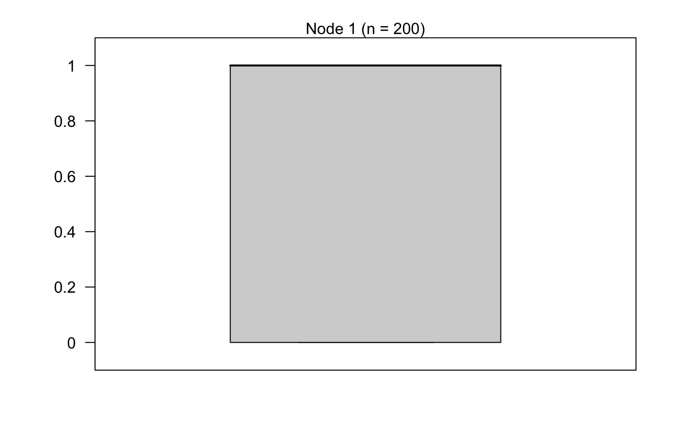
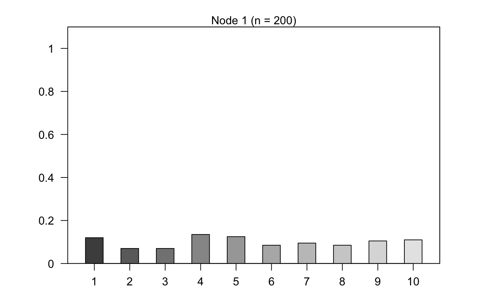
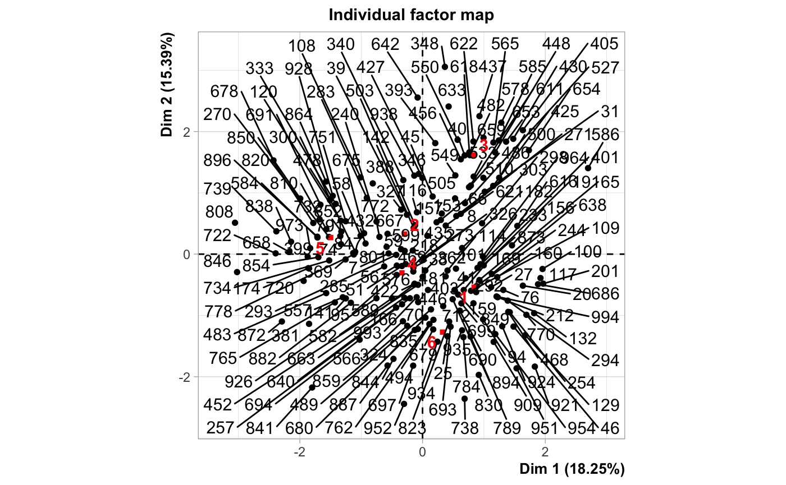
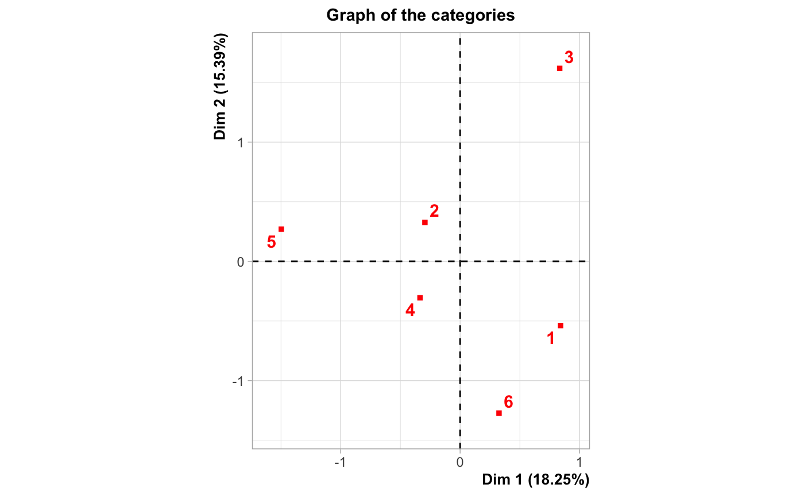
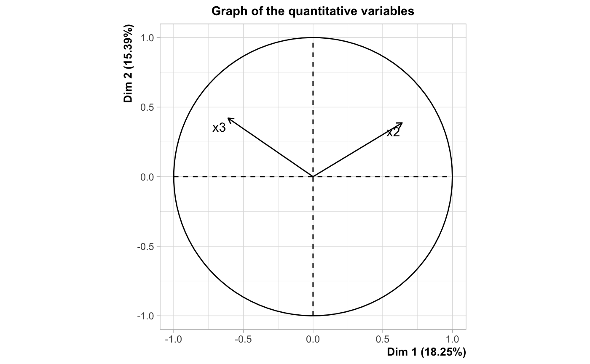
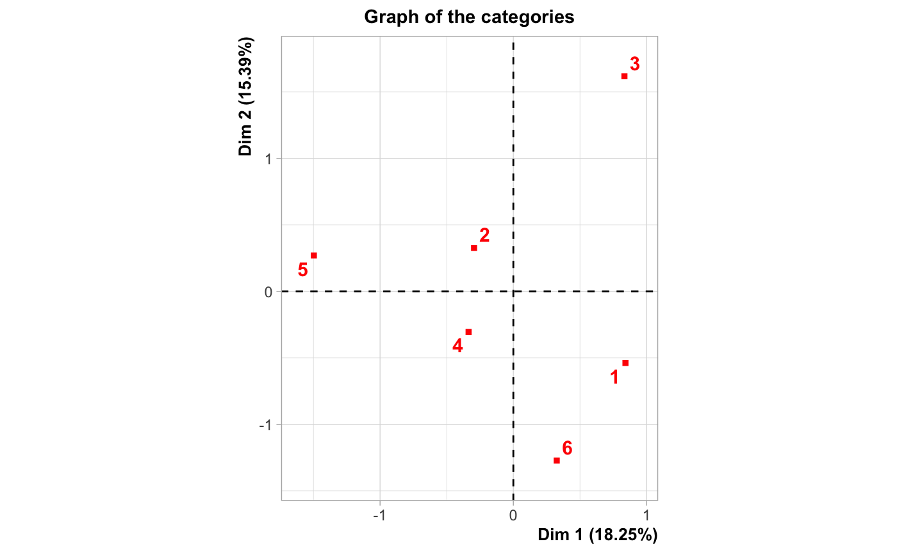
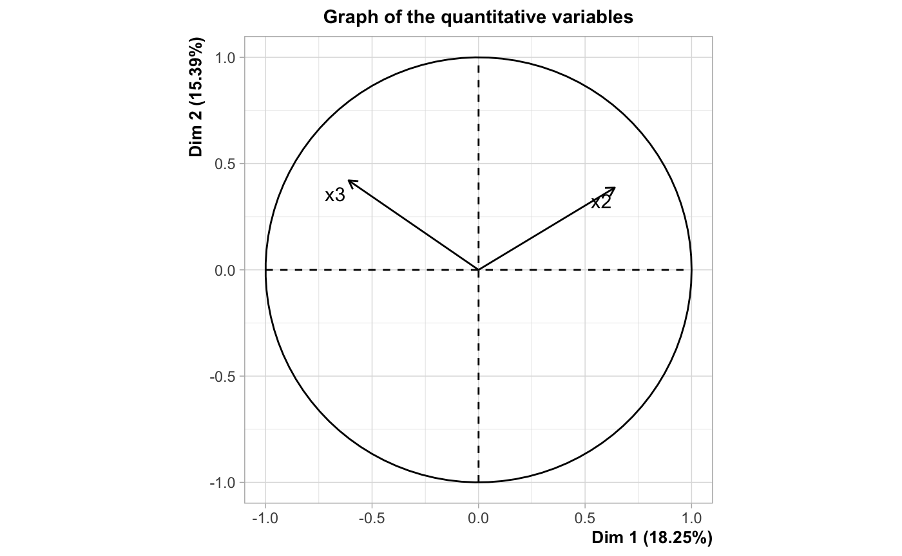

glmtree: logistic regression trees for efficient segmentation
Adrien Ehrhardt
2020-08-26
Source:vignettes/glmtree.Rmd
glmtree.RmdSegmentation
Three clusters, one predictive law
Simulation
library(glmtree) data = generateData(n = 1000, scenario = "no tree", visualize = TRUE)

int_train = sample.int(n = 1000, size = 0.2*1000) test = data[-int_train,] data = data[int_train,]
PCA

data$pca1 = predict(mixed, data)$coord[,1] data$pca2 = predict(mixed, data)$coord[,2] test$pca1 = predict(mixed, test)$coord[,1] test$pca2 = predict(mixed, test)$coord[,2] data$cluster = ifelse(data$pca1 > 1, 1, ifelse(data$pca1 > 0, 2, 3)) test$cluster = ifelse(test$pca1 > 1, 1, ifelse(test$pca1 > 0, 2, 3)) pred = matrix(0, nrow = 0.2*1000, ncol = 1) for (j in 1:3) { modele = glm(y ~ x1 + x2, data = data[data$cluster==j,], family=binomial(link = "logit")) pred[test$cluster==j] = predict(modele, test[test$cluster==j,], type="response") } normalizedGini(test$y,pred)
## [1] 0.6559116plot(mixed, choix = 'ind', label = "none")

MOB
if (require(partykit, quietly = TRUE)) { mob_data = partykit::glmtree(formula = y ~ x1 + x2 | x1 + x2, data = data, family = binomial) plot(mob_data) normalizedGini(test$y, predict(mob_data,test)) }
##
## Attaching package: 'partykit'## The following object is masked from 'package:glmtree':
##
## glmtree
## [1] 0.6724791
glmtree approach
## The bic criterion for iteration 1 is 0## The bic criterion for iteration 2 is -217.461374413269## The bic criterion for iteration 3 is -231.977756577519## The bic criterion for iteration 4 is -231.977756577519## The bic criterion for iteration 5 is -231.977756577519## The bic criterion for iteration 6 is -231.977756577519## The bic criterion for iteration 7 is -232.85233924487## The bic criterion for iteration 8 is -232.85233924487## The bic criterion for iteration 9 is -232.85233924487## The bic criterion for iteration 10 is -232.85233924487## The bic criterion for iteration 11 is -232.85233924487## The bic criterion for iteration 12 is -232.85233924487## The bic criterion for iteration 13 is -232.85233924487## The bic criterion for iteration 14 is -232.85233924487## The bic criterion for iteration 15 is -232.85233924487## The bic criterion for iteration 16 is -232.85233924487## The bic criterion for iteration 17 is -232.85233924487## The bic criterion for iteration 18 is -232.85233924487## The bic criterion for iteration 19 is -232.85233924487## The bic criterion for iteration 20 is -232.85233924487## The bic criterion for iteration 21 is -232.85233924487## The bic criterion for iteration 22 is -232.85233924487## The bic criterion for iteration 23 is -232.85233924487## The bic criterion for iteration 24 is -232.85233924487## The bic criterion for iteration 25 is -232.85233924487## The bic criterion for iteration 26 is -232.85233924487## The bic criterion for iteration 27 is -232.85233924487## The bic criterion for iteration 28 is -232.85233924487## The bic criterion for iteration 29 is -232.85233924487## The bic criterion for iteration 30 is -232.85233924487## The bic criterion for iteration 31 is -232.85233924487## The bic criterion for iteration 32 is -232.85233924487## The bic criterion for iteration 33 is -232.85233924487## The bic criterion for iteration 34 is -232.85233924487## The bic criterion for iteration 35 is -232.85233924487## The bic criterion for iteration 36 is -232.85233924487## The bic criterion for iteration 37 is -232.85233924487## The bic criterion for iteration 38 is -232.85233924487## The bic criterion for iteration 39 is -232.85233924487## The bic criterion for iteration 40 is -232.85233924487## The bic criterion for iteration 41 is -232.85233924487## The bic criterion for iteration 42 is -232.85233924487## The bic criterion for iteration 43 is -232.85233924487## The bic criterion for iteration 44 is -232.85233924487## The bic criterion for iteration 45 is -232.85233924487## The bic criterion for iteration 46 is -232.85233924487## The bic criterion for iteration 47 is -232.85233924487## The bic criterion for iteration 48 is -232.85233924487## The bic criterion for iteration 49 is -232.85233924487## The bic criterion for iteration 50 is -232.85233924487## The bic criterion for iteration 51 is -232.85233924487## The bic criterion for iteration 52 is -232.85233924487## The bic criterion for iteration 53 is -232.85233924487## The bic criterion for iteration 54 is -232.85233924487## The bic criterion for iteration 55 is -232.85233924487## The bic criterion for iteration 56 is -232.85233924487## The bic criterion for iteration 57 is -232.85233924487## The bic criterion for iteration 58 is -232.85233924487## The bic criterion for iteration 59 is -232.85233924487## The bic criterion for iteration 60 is -232.85233924487## The bic criterion for iteration 61 is -232.85233924487## The bic criterion for iteration 62 is -232.85233924487## The bic criterion for iteration 63 is -232.85233924487## The bic criterion for iteration 64 is -232.85233924487## The bic criterion for iteration 65 is -232.85233924487## The bic criterion for iteration 66 is -232.85233924487## The bic criterion for iteration 67 is -232.85233924487## The bic criterion for iteration 68 is -232.85233924487## The bic criterion for iteration 69 is -232.85233924487## The bic criterion for iteration 70 is -232.85233924487## The bic criterion for iteration 71 is -232.85233924487## The bic criterion for iteration 72 is -232.85233924487## The bic criterion for iteration 73 is -232.85233924487## The bic criterion for iteration 74 is -232.85233924487## The bic criterion for iteration 75 is -232.85233924487## The bic criterion for iteration 76 is -232.85233924487## The bic criterion for iteration 77 is -232.85233924487## The bic criterion for iteration 78 is -232.85233924487## The bic criterion for iteration 79 is -232.85233924487## The bic criterion for iteration 80 is -232.85233924487## The bic criterion for iteration 81 is -232.85233924487## The bic criterion for iteration 82 is -232.85233924487## The bic criterion for iteration 83 is -232.85233924487## The bic criterion for iteration 84 is -232.85233924487## The bic criterion for iteration 85 is -232.85233924487## The bic criterion for iteration 86 is -232.85233924487## The bic criterion for iteration 87 is -232.85233924487## The bic criterion for iteration 88 is -232.85233924487## The bic criterion for iteration 89 is -232.85233924487## The bic criterion for iteration 90 is -232.85233924487## The bic criterion for iteration 91 is -232.85233924487## The bic criterion for iteration 92 is -232.85233924487## The bic criterion for iteration 93 is -232.85233924487## The bic criterion for iteration 94 is -232.85233924487## The bic criterion for iteration 95 is -232.85233924487## The bic criterion for iteration 96 is -232.85233924487## The bic criterion for iteration 97 is -232.85233924487## The bic criterion for iteration 98 is -232.85233924487## The bic criterion for iteration 99 is -232.85233924487## The bic criterion for iteration 100 is -232.85233924487## The bic criterion for iteration 101 is -232.85233924487## The bic criterion for iteration 102 is -232.85233924487## The bic criterion for iteration 103 is -232.85233924487## The bic criterion for iteration 104 is -232.85233924487## The bic criterion for iteration 105 is -217.461374413269## The bic criterion for iteration 106 is -232.85233924487## The bic criterion for iteration 107 is -217.461374413269## The bic criterion for iteration 108 is -232.85233924487## The bic criterion for iteration 109 is -232.85233924487## The bic criterion for iteration 110 is -232.85233924487## The bic criterion for iteration 111 is -232.85233924487## The bic criterion for iteration 112 is -217.461374413269## The bic criterion for iteration 113 is -232.85233924487## The bic criterion for iteration 114 is -232.85233924487## The bic criterion for iteration 115 is -232.85233924487## The bic criterion for iteration 116 is -232.85233924487## The bic criterion for iteration 117 is -232.85233924487## The bic criterion for iteration 118 is -232.85233924487## The bic criterion for iteration 119 is -232.85233924487## The bic criterion for iteration 120 is -232.85233924487## The bic criterion for iteration 121 is -232.85233924487## The bic criterion for iteration 122 is -232.85233924487## The bic criterion for iteration 123 is -232.85233924487## The bic criterion for iteration 124 is -232.85233924487## The bic criterion for iteration 125 is -232.85233924487## The bic criterion for iteration 126 is -232.85233924487## The bic criterion for iteration 127 is -232.85233924487## The bic criterion for iteration 128 is -232.85233924487## The bic criterion for iteration 129 is -232.85233924487## The bic criterion for iteration 130 is -232.85233924487## The bic criterion for iteration 131 is -232.85233924487## The bic criterion for iteration 132 is -232.85233924487## The bic criterion for iteration 133 is -232.85233924487## The bic criterion for iteration 134 is -232.85233924487## The bic criterion for iteration 135 is -232.85233924487## The bic criterion for iteration 136 is -232.85233924487## The bic criterion for iteration 137 is -232.85233924487## The bic criterion for iteration 138 is -232.85233924487## The bic criterion for iteration 139 is -232.85233924487## The bic criterion for iteration 140 is -232.85233924487## The bic criterion for iteration 141 is -232.85233924487## The bic criterion for iteration 142 is -232.85233924487## The bic criterion for iteration 143 is -232.85233924487## The bic criterion for iteration 144 is -232.85233924487## The bic criterion for iteration 145 is -232.85233924487## The bic criterion for iteration 146 is -232.85233924487## The bic criterion for iteration 147 is -232.85233924487## The bic criterion for iteration 148 is -232.85233924487## The bic criterion for iteration 149 is -232.85233924487## The bic criterion for iteration 150 is -232.85233924487## The bic criterion for iteration 151 is -232.85233924487## The bic criterion for iteration 152 is -232.85233924487## The bic criterion for iteration 153 is -232.85233924487## The bic criterion for iteration 154 is -232.85233924487## The bic criterion for iteration 155 is -232.85233924487## The bic criterion for iteration 156 is -217.461374413269## The bic criterion for iteration 157 is -217.461374413269## The bic criterion for iteration 158 is -232.85233924487## The bic criterion for iteration 159 is -232.85233924487## The bic criterion for iteration 160 is -232.85233924487## The bic criterion for iteration 161 is -232.85233924487## The bic criterion for iteration 162 is -232.85233924487## The bic criterion for iteration 163 is -232.85233924487## The bic criterion for iteration 164 is -232.85233924487## The bic criterion for iteration 165 is -232.85233924487## The bic criterion for iteration 166 is -232.85233924487## The bic criterion for iteration 167 is -232.85233924487## The bic criterion for iteration 168 is -232.85233924487## The bic criterion for iteration 169 is -232.85233924487## The bic criterion for iteration 170 is -232.85233924487## The bic criterion for iteration 171 is -232.85233924487## The bic criterion for iteration 172 is -232.85233924487## The bic criterion for iteration 173 is -232.85233924487## The bic criterion for iteration 174 is -232.85233924487## The bic criterion for iteration 175 is -232.85233924487## The bic criterion for iteration 176 is -232.85233924487## The bic criterion for iteration 177 is -232.85233924487## The bic criterion for iteration 178 is -232.85233924487## The bic criterion for iteration 179 is -232.85233924487## The bic criterion for iteration 180 is -232.85233924487## The bic criterion for iteration 181 is -232.85233924487## The bic criterion for iteration 182 is -232.85233924487## The bic criterion for iteration 183 is -232.85233924487## The bic criterion for iteration 184 is -232.85233924487## The bic criterion for iteration 185 is -232.85233924487## The bic criterion for iteration 186 is -232.85233924487## The bic criterion for iteration 187 is -232.85233924487## The bic criterion for iteration 188 is -232.85233924487## The bic criterion for iteration 189 is -232.85233924487## The bic criterion for iteration 190 is -232.85233924487## The bic criterion for iteration 191 is -232.85233924487## The bic criterion for iteration 192 is -232.85233924487## The bic criterion for iteration 193 is -232.85233924487## The bic criterion for iteration 194 is -232.85233924487## The bic criterion for iteration 195 is -232.85233924487## The bic criterion for iteration 196 is -232.85233924487## The bic criterion for iteration 197 is -232.85233924487## The bic criterion for iteration 198 is -232.85233924487## The bic criterion for iteration 199 is -232.85233924487## The bic criterion for iteration 200 is -232.85233924487
data$c_map <- factor(apply(predict(tree@best.tree$tree,data,type="prob"),1,function(p) names(which.max(p)))) test$c_map <- factor(apply(predict(tree@best.tree$tree,data,type="prob"),1,function(p) names(which.max(p)))) table(data$c_map)
##
## 10
## 200plot(data[,1],data[,2],pch=2+data[,3],col=as.numeric(data$c_map),xlab="First coordinate",ylab="Second coordinate")

plot(tree@best.tree$tree)

pred = matrix(0, nrow = 0.2*1000, ncol = 1) for (j in levels(data$c_map)) { modele = glm(y ~ x1 + x2, data = data[data$c_map==j,], family=binomial(link = "logit")) pred[test$c_map==j] = predict(modele, test[test$c_map==j,], type="response") } normalizedGini(test$y,pred)
## [1] 0.6724791One “cluster”, three predictive laws
Simulation
data = generateData(n = 1000, scenario = "tree", visualize = TRUE)


int_train = sample.int(n = 1000, size = 0.2*1000) test = data[-int_train,] data = data[int_train,]
PCA

 

dim_famd = predict(mixed,test)$coord[,"Dim 1"] < 0 pred = matrix(0, nrow = 0.2*1000, ncol = 1) for (j in c(TRUE,FALSE)) { modele = glm(y ~ x1 + x2 + x3, data = data[dim_famd==j,], family=binomial(link = "logit")) pred[dim_famd==j] = predict(modele, test[dim_famd==j,], type="response") } normalizedGini(test$y,pred)
## [1] 0.1693104MOB
if (require(partykit, quietly = TRUE)) { mob_data = partykit::glmtree(formula = y ~ x1 + x2 +x3 | x1 + x2 + x3, data = data, family = binomial) plot(mob_data) normalizedGini(test$y, predict(mob_data,test)) }

## [1] 0.2925877
glmtree approach
## The bic criterion for iteration 1 is 0## The bic criterion for iteration 2 is -300.665596393775## The bic criterion for iteration 3 is -314.53005402539## The bic criterion for iteration 4 is -300.665596393775## The bic criterion for iteration 5 is -300.665596393775## The bic criterion for iteration 6 is -300.665596393775## The bic criterion for iteration 7 is -300.665596393775## The bic criterion for iteration 8 is -300.665596393775## The bic criterion for iteration 9 is -291.158742886988## The bic criterion for iteration 10 is -300.665596393775## The bic criterion for iteration 11 is -291.158742886988## The bic criterion for iteration 12 is -291.158742886988## The bic criterion for iteration 13 is -291.158742886988## The bic criterion for iteration 14 is -291.158742886988## The bic criterion for iteration 15 is -291.158742886988## The bic criterion for iteration 16 is -291.158742886988## The bic criterion for iteration 17 is -291.158742886988## The bic criterion for iteration 18 is -291.158742886988## The bic criterion for iteration 19 is -291.158742886988## The bic criterion for iteration 20 is -300.665596393775## The bic criterion for iteration 21 is -291.158742886988## The bic criterion for iteration 22 is -291.158742886988## The bic criterion for iteration 23 is -291.158742886988## The bic criterion for iteration 24 is -291.158742886988## The bic criterion for iteration 25 is -291.158742886988## The bic criterion for iteration 26 is -291.158742886988## The bic criterion for iteration 27 is -291.158742886988## The bic criterion for iteration 28 is -291.158742886988## The bic criterion for iteration 29 is -291.158742886988## The bic criterion for iteration 30 is -291.158742886988## The bic criterion for iteration 31 is -291.158742886988## The bic criterion for iteration 32 is -291.158742886988## The bic criterion for iteration 33 is -291.158742886988## The bic criterion for iteration 34 is -291.158742886988## The bic criterion for iteration 35 is -291.158742886988## The bic criterion for iteration 36 is -291.158742886988## The bic criterion for iteration 37 is -291.158742886988## The bic criterion for iteration 38 is -291.158742886988## The bic criterion for iteration 39 is -291.158742886988## The bic criterion for iteration 40 is -291.158742886988## The bic criterion for iteration 41 is -291.158742886988## The bic criterion for iteration 42 is -291.158742886988## The bic criterion for iteration 43 is -291.158742886988## The bic criterion for iteration 44 is -291.158742886988## The bic criterion for iteration 45 is -291.158742886988## The bic criterion for iteration 46 is -291.158742886988## The bic criterion for iteration 47 is -291.158742886988## The bic criterion for iteration 48 is -291.158742886988## The bic criterion for iteration 49 is -291.158742886988## The bic criterion for iteration 50 is -291.158742886988## The bic criterion for iteration 51 is -291.158742886988## The bic criterion for iteration 52 is -291.158742886988## The bic criterion for iteration 53 is -291.158742886988## The bic criterion for iteration 54 is -291.158742886988## The bic criterion for iteration 55 is -291.158742886988## The bic criterion for iteration 56 is -291.158742886988## The bic criterion for iteration 57 is -291.158742886988## The bic criterion for iteration 58 is -291.158742886988## The bic criterion for iteration 59 is -291.158742886988## The bic criterion for iteration 60 is -291.158742886988## The bic criterion for iteration 61 is -291.158742886988## The bic criterion for iteration 62 is -291.158742886988## The bic criterion for iteration 63 is -291.158742886988## The bic criterion for iteration 64 is -291.158742886988## The bic criterion for iteration 65 is -291.158742886988## The bic criterion for iteration 66 is -291.158742886988## The bic criterion for iteration 67 is -291.158742886988## The bic criterion for iteration 68 is -291.158742886988## The bic criterion for iteration 69 is -291.158742886988## The bic criterion for iteration 70 is -291.158742886988## The bic criterion for iteration 71 is -291.158742886988## The bic criterion for iteration 72 is -291.158742886988## The bic criterion for iteration 73 is -291.158742886988## The bic criterion for iteration 74 is -291.158742886988## The bic criterion for iteration 75 is -291.158742886988## The bic criterion for iteration 76 is -291.158742886988## The bic criterion for iteration 77 is -291.158742886988## The bic criterion for iteration 78 is -291.158742886988## The bic criterion for iteration 79 is -291.158742886988## The bic criterion for iteration 80 is -291.158742886988## The bic criterion for iteration 81 is -291.158742886988## The bic criterion for iteration 82 is -291.158742886988## The bic criterion for iteration 83 is -291.158742886988## The bic criterion for iteration 84 is -291.158742886988## The bic criterion for iteration 85 is -291.158742886988## The bic criterion for iteration 86 is -291.158742886988## The bic criterion for iteration 87 is -291.158742886988## The bic criterion for iteration 88 is -291.158742886988## The bic criterion for iteration 89 is -291.158742886988## The bic criterion for iteration 90 is -291.158742886988## The bic criterion for iteration 91 is -291.158742886988## The bic criterion for iteration 92 is -291.158742886988## The bic criterion for iteration 93 is -291.158742886988## The bic criterion for iteration 94 is -291.158742886988## The bic criterion for iteration 95 is -291.158742886988## The bic criterion for iteration 96 is -291.158742886988## The bic criterion for iteration 97 is -291.158742886988## The bic criterion for iteration 98 is -291.158742886988## The bic criterion for iteration 99 is -291.158742886988## The bic criterion for iteration 100 is -291.158742886988## The bic criterion for iteration 101 is -291.158742886988## The bic criterion for iteration 102 is -291.158742886988## The bic criterion for iteration 103 is -291.158742886988## The bic criterion for iteration 104 is -291.158742886988## The bic criterion for iteration 105 is -291.158742886988## The bic criterion for iteration 106 is -291.158742886988## The bic criterion for iteration 107 is -291.158742886988## The bic criterion for iteration 108 is -291.158742886988## The bic criterion for iteration 109 is -291.158742886988## The bic criterion for iteration 110 is -291.158742886988## The bic criterion for iteration 111 is -291.158742886988## The bic criterion for iteration 112 is -291.158742886988## The bic criterion for iteration 113 is -291.158742886988## The bic criterion for iteration 114 is -291.158742886988## The bic criterion for iteration 115 is -291.158742886988## The bic criterion for iteration 116 is -291.158742886988## The bic criterion for iteration 117 is -291.158742886988## The bic criterion for iteration 118 is -291.158742886988## The bic criterion for iteration 119 is -291.158742886988## The bic criterion for iteration 120 is -291.158742886988## The bic criterion for iteration 121 is -291.158742886988## The bic criterion for iteration 122 is -291.158742886988## The bic criterion for iteration 123 is -291.158742886988## The bic criterion for iteration 124 is -291.158742886988## The bic criterion for iteration 125 is -291.158742886988## The bic criterion for iteration 126 is -291.158742886988## The bic criterion for iteration 127 is -291.158742886988## The bic criterion for iteration 128 is -291.158742886988## The bic criterion for iteration 129 is -291.158742886988## The bic criterion for iteration 130 is -291.158742886988## The bic criterion for iteration 131 is -291.158742886988## The bic criterion for iteration 132 is -291.158742886988## The bic criterion for iteration 133 is -291.158742886988## The bic criterion for iteration 134 is -291.158742886988## The bic criterion for iteration 135 is -291.158742886988## The bic criterion for iteration 136 is -291.158742886988## The bic criterion for iteration 137 is -291.158742886988## The bic criterion for iteration 138 is -291.158742886988## The bic criterion for iteration 139 is -291.158742886988## The bic criterion for iteration 140 is -291.158742886988## The bic criterion for iteration 141 is -291.158742886988## The bic criterion for iteration 142 is -291.158742886988## The bic criterion for iteration 143 is -291.158742886988## The bic criterion for iteration 144 is -291.158742886988## The bic criterion for iteration 145 is -291.158742886988## The bic criterion for iteration 146 is -291.158742886988## The bic criterion for iteration 147 is -291.158742886988## The bic criterion for iteration 148 is -291.158742886988## The bic criterion for iteration 149 is -291.158742886988## The bic criterion for iteration 150 is -291.158742886988## The bic criterion for iteration 151 is -291.158742886988## The bic criterion for iteration 152 is -291.158742886988## The bic criterion for iteration 153 is -291.158742886988## The bic criterion for iteration 154 is -291.158742886988## The bic criterion for iteration 155 is -291.158742886988## The bic criterion for iteration 156 is -291.158742886988## The bic criterion for iteration 157 is -291.158742886988## The bic criterion for iteration 158 is -291.158742886988## The bic criterion for iteration 159 is -291.158742886988## The bic criterion for iteration 160 is -291.158742886988## The bic criterion for iteration 161 is -291.158742886988## The bic criterion for iteration 162 is -291.158742886988## The bic criterion for iteration 163 is -291.158742886988## The bic criterion for iteration 164 is -291.158742886988## The bic criterion for iteration 165 is -291.158742886988## The bic criterion for iteration 166 is -291.158742886988## The bic criterion for iteration 167 is -291.158742886988## The bic criterion for iteration 168 is -291.158742886988## The bic criterion for iteration 169 is -291.158742886988## The bic criterion for iteration 170 is -291.158742886988## The bic criterion for iteration 171 is -291.158742886988## The bic criterion for iteration 172 is -291.158742886988## The bic criterion for iteration 173 is -291.158742886988## The bic criterion for iteration 174 is -291.158742886988## The bic criterion for iteration 175 is -291.158742886988## The bic criterion for iteration 176 is -291.158742886988## The bic criterion for iteration 177 is -291.158742886988## The bic criterion for iteration 178 is -291.158742886988## The bic criterion for iteration 179 is -291.158742886988## The bic criterion for iteration 180 is -291.158742886988## The bic criterion for iteration 181 is -291.158742886988## The bic criterion for iteration 182 is -291.158742886988## The bic criterion for iteration 183 is -291.158742886988## The bic criterion for iteration 184 is -291.158742886988## The bic criterion for iteration 185 is -291.158742886988## The bic criterion for iteration 186 is -291.158742886988## The bic criterion for iteration 187 is -291.158742886988## The bic criterion for iteration 188 is -291.158742886988## The bic criterion for iteration 189 is -291.158742886988## The bic criterion for iteration 190 is -291.158742886988## The bic criterion for iteration 191 is -291.158742886988## The bic criterion for iteration 192 is -291.158742886988## The bic criterion for iteration 193 is -291.158742886988## The bic criterion for iteration 194 is -291.158742886988## The bic criterion for iteration 195 is -291.158742886988## The bic criterion for iteration 196 is -291.158742886988## The bic criterion for iteration 197 is -291.158742886988## The bic criterion for iteration 198 is -291.158742886988## The bic criterion for iteration 199 is -291.158742886988## The bic criterion for iteration 200 is -291.158742886988
data$c_map <- factor(apply(predict(tree@best.tree$tree,data,type="prob"),1,function(p) names(which.max(p)))) test$c_map <- factor(apply(predict(tree@best.tree$tree,test,type="prob"),1,function(p) names(which.max(p)))) table(data$c,data$c_map)
##
## 10 7
## 1 31 33
## 2 69 0
## 3 0 67plot(data[,1],data[,2],pch=2+data[,3],col=as.numeric(data$c_map),xlab="First coordinate",ylab="Second coordinate")

plot(tree@best.tree$tree)

pred = matrix(0, nrow = 0.2*1000, ncol = 1) for (j in 1:nlevels(data$c_map)) { pred[test$c_map==levels(data$c_map)[j]] = predict(tree@best.tree$glms[[j]], test[test$c_map==levels(data$c_map)[j],], type="response") } normalizedGini(test$y,pred)
## [1] 0.3483163